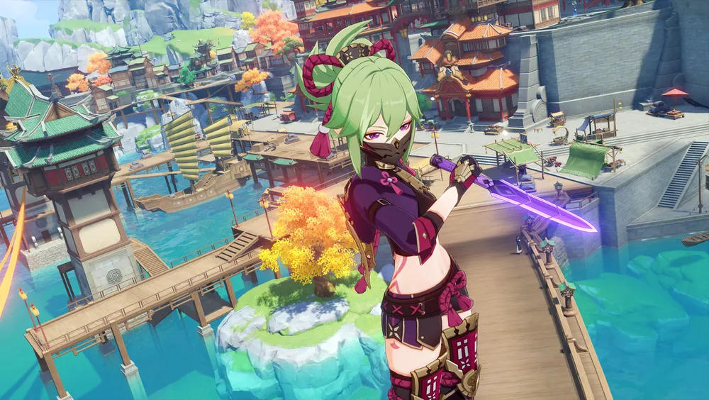
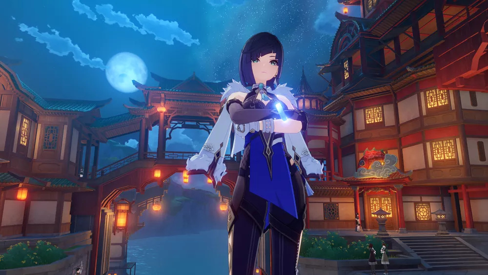
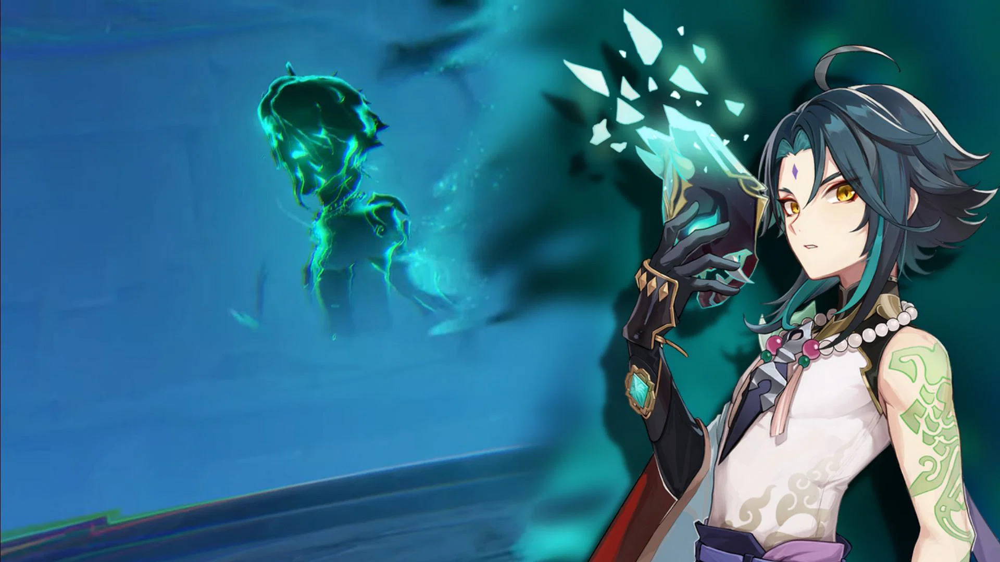
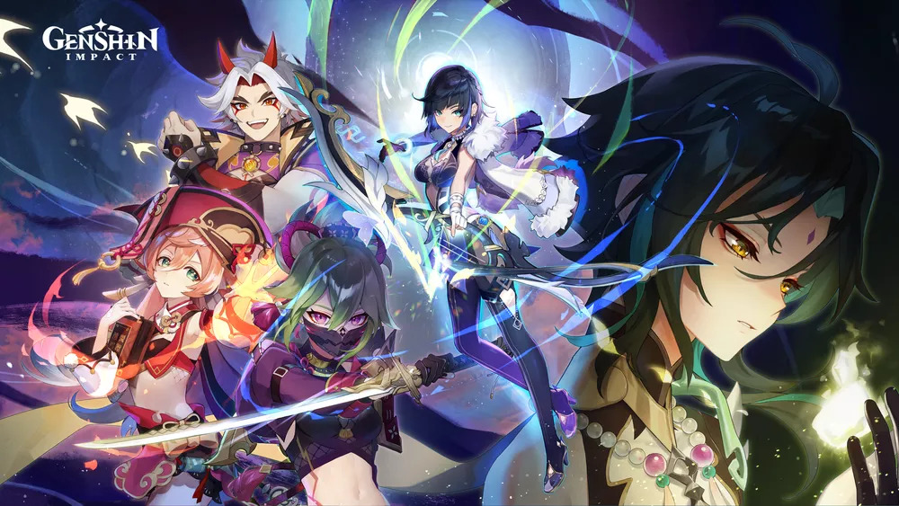
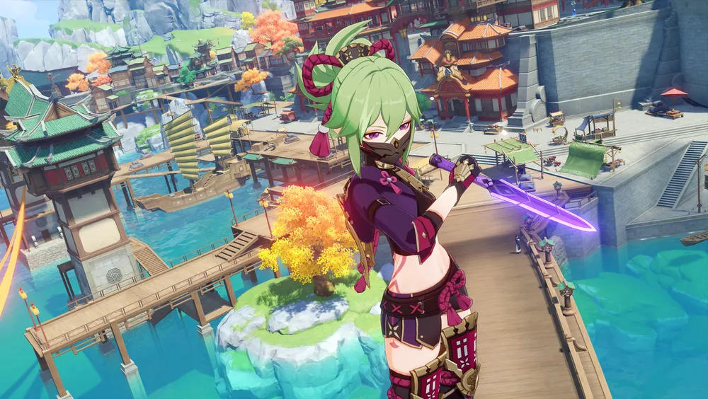
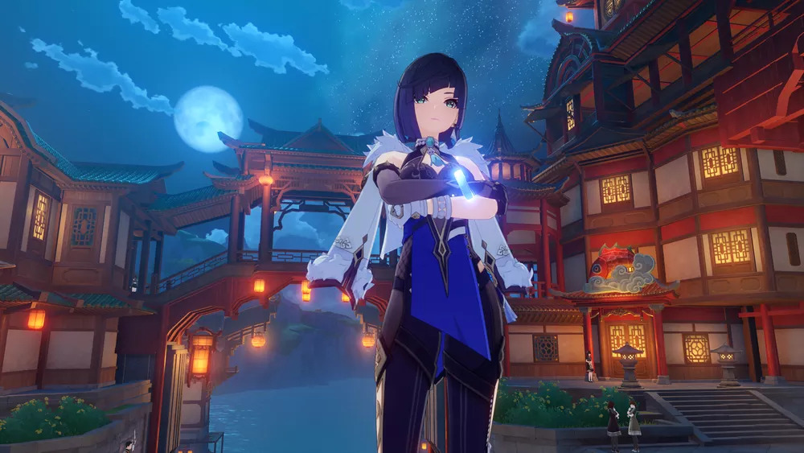
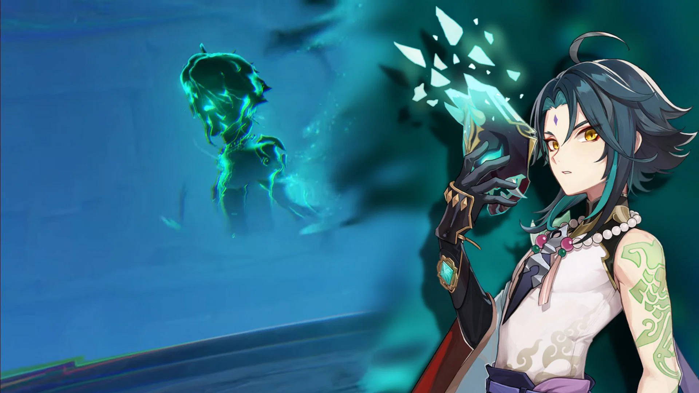
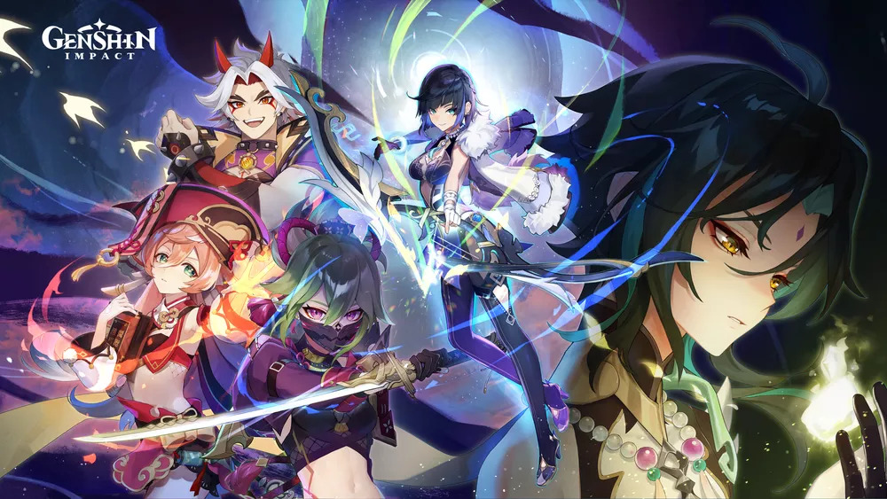

Novidades da atualização
Genshin Impact chega à sua versão 2.7 na próxima terça-feira (31) com novos conteúdos disponíveis, incluindo missões de história, eventos sazonais e personagens jogáveis como Yelan e Kuki Shinobu. Intitulada “Sonhos Escondidos nas Profundezas”
 







Novas missões e Eventos
Os jogadores poderão continuar a exploração do misterioso Despenhadeiro de Liyue em uma nova Missão Arconte, que é o arco principal da história do game. Presos nas profundezas, Yanfei, Yelan, Arataki Itto e Kuki Shinobu terão de lutar pela sobrevivência ao lado do(a) Viajante e encarar uma série de desafios com recompensas.